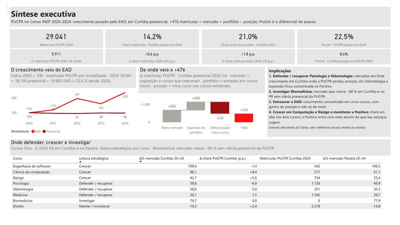
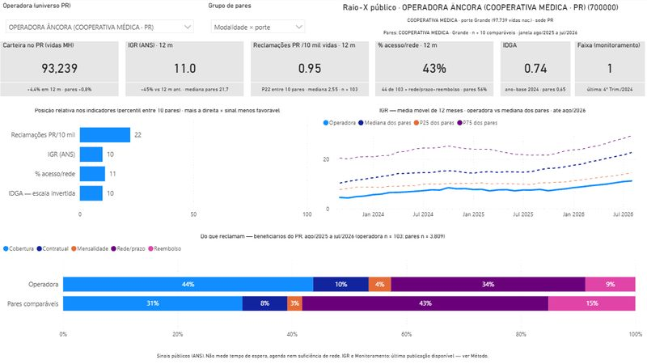
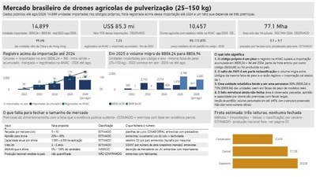

Projetos
Cases de Business Intelligence e Market Intelligence. Todos usam exclusivamente dados públicos ou sintéticos.
-

Case 01PUCPR 2020–2024: análise de mercado, competição e portfólio
Inteligência de mercado no ensino superior: onde a PUCPR cresceu, onde ganhou ou perdeu posição frente a Curitiba, ao Paraná e ao Brasil, e o que isso implica para o portfólio. Dashboard Power BI de 11 páginas a partir dos microdados do Censo INEP.
-

Case 02Raio-X público de uma operadora de plano de saúde
O que os dados abertos da ANS e do CNES permitem dizer sobre uma operadora — carteira, reclamações, regulação, posição entre pares e rede no território — e onde exatamente o dado público para de responder. Painel Power BI de 9 páginas com 280 medidas DAX, validado por 14 testes formais.
-

Case 03Mercado brasileiro de drones agrícolas de pulverização
De que tamanho é o mercado de drones de pulverização de 25 a 150 kg — medido por importações, frota registrada, base agrícola e preços — e quais partes da resposta ainda são premissa. Painel Power BI de 9 páginas com 67 medidas DAX, em que cada número traz a classificação da evidência que o sustenta.